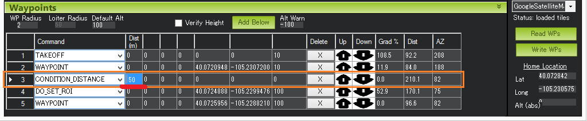
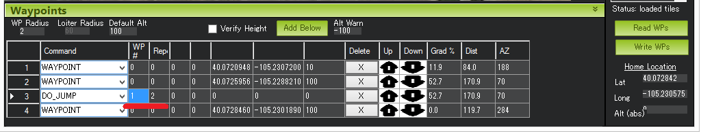
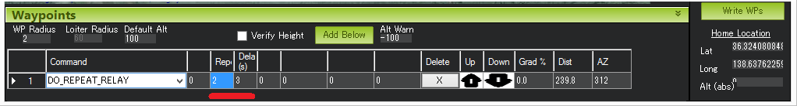
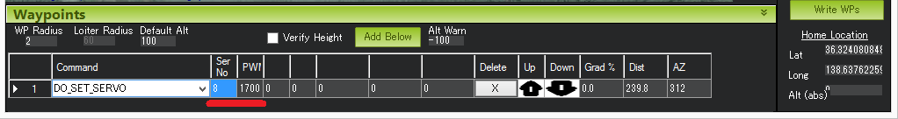
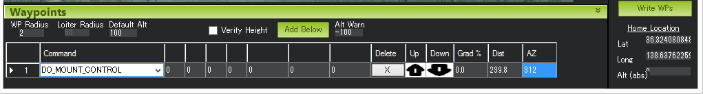

Copter Mission Command List¶
This page provides details of all the mission commands (i.e. MAVLink commands) supported by Copter that can be run as part of a mission (see AUTO flight mode).
Each of the commands below is either a “Navigation” command or a “Do” command. Navigation commands (e.g. “TakeOff” and “Waypoint”) affect the location of the vehicle while “Do” commands (e.g. “Do-Set-Servo” and “Do-Cam-Trigg-Dist”) are for auxiliary functions and do not affect the vehicle’s position.
During a mission at most one “Navigation” command and one “Do” command can be running at one time. The “Do” commands will be run in order as soon as the preceding navigation command before them completes. For more information on setting up missions please refer to the Planning a Mission with Waypoints and Events page.
Takeoff¶
{kind=link}
The vehicle will climb straight up from its current location to the altitude specified (in meters). This should be the first command of nearly all missions. If the mission is begun while the copter is already flying, the vehicle will climb straight up to the specified altitude, if the vehicle is already above the specified altitude the takeoff command will be ignored and the mission will move onto the next command immediately.
Waypoint¶

The vehicle will fly a straight line to the location specified as a lat, lon and altitude (in meters).
Delay - the amount of time to wait (in seconds) at the waypoint before proceeding to the next command
Hit Rad - not supported - meant to hold the distance (in meters) from the target point that will qualify the waypoint as complete. This command is not supported. Instead, the WPNAV_RADIUS parameter should be used (see “WP Radius” field in the above screenshot or adjust through the Standard Parameters List). Even the WPNAV_RADIUS is only used when the waypoint has a Delay. With no delay specified the waypoint will be considered complete when the virtual point that the vehicle is chasing reaches the waypoint. This can be 10m (or more) ahead of the vehicle meaning that the vehicle will turn towards the following waypoint long before it actually reaches the current waypoint
Yaw Ang - not supported - meant to hold the resulting yaw angle in degrees (0=north, 90 = east). Instead use a CONDITION_YAW command.
Lat, Lon - the latitude and longitude targets. If left as zero, current location will be substituted for waypoint location, making it appear as if the waypoint is simply skipped.
Alt - the target altitude above home in meters. If left as zero it will hold the current altitude.
Spline Waypoint¶
{kind=link}
Spline waypoints take all the same arguments as regular waypoints (lat, lon, alt, delay) but when executed the vehicle will fly smooth paths (both vertically and horizontally) instead of straight lines. Spline waypoints can be mixed with regular straight line waypoints as shown in the image above.
The Mission Planner shows the path the vehicle will take. The image above shows some characteristics of the spline
The 1 second delay at the end of Waypoint #1 causes the vehicle to stop so Spline command #2 begins by taking a sharp 90degree turn
The direction of travel as the vehicle passes through Spline Waypoint #3 is parallel to an imaginary line drawn between waypoints #2 and #4
Waypoint #5 is a straight line so the vehicle lines itself up to point towards waypoint #5 even before reaching waypoint #4.
Loiter_Time¶

The vehicle will fly to and then wait at the specified location for the specified number of seconds. This is the same as a Waypoint command.
Times - the number of seconds to remain at the location.
Lat, Lon - the latitude and longitude targets. If left as zero it will hold at the current location.
Alt - the target altitude above home in meters. If left as zero it will hold at the current altitude.
Loiter_Turns¶

The mission equivalent of the Circle flight mode. The vehicle will fly a circle around the specified lat, lon, and altitude (in meters). The radius of the circle is controlled by the CIRCLE_RADIUS parameter (i.e. cannot be set as part of the mission). The direction can be changed to counter-clockwise by setting CIRCLE_RATE to a negative number.
Turn - the number of full rotations to complete around the point.
Radius - Loiter radius around waypoint. Units are in meters.
0-255 is 0-255 meters.
256-259 is 250 meters. Note: The radius will be smaller than the set value.
260-269 is 260 meters.
270-279 is 270 meters.
:
2550 and above, 2550 meters.
Lat, Lon - the latitude and longitude targets. If left as zero it will circle around the current location.
Alt - the target altitude above home in meters. If left as zero it will circle at the current altitude.
Loiter_Unlimited¶

The vehicle will fly to and then wait at the specified location indefinitely. The mission will not proceed past this command.
Lat, Lon - the latitude and longitude targets. If left as zero it will wait at the current location.
Alt - the target altitude above home in meters. If left as zero it will wait at the current altitude.
Return-To-Launch¶
{kind=link}
Mission equivalent of the RTL flight mode. As described on the RTL flight mode wiki page, the vehicle will first climb to the RTL_ALT parameter’s specified altitude (default is 15m) before returning home. The home location is where the vehicle was last armed.
This command takes no parameters and generally should be the last command in the mission.
Land¶
{kind=link}
The vehicle will land at its current location or at the lat/lon coordinates provided. This is the mission equivalent of the LAND flight mode.
Lat, Lon - the latitude and longitude targets. If left as zero it will land at the current location.
Delay¶
{kind=link}
The vehicle will remain at its current location until the specified number of seconds has passed or the absolute time is reached. The first column (“Seconds”) holds the number of seconds to delay. Set to -1 if this field should be ignored. The “hour UTC”, “minute UTC” and “second UTC” fields can be used to specify an absolute time (UTC). The example above will cause the vehicle to take-off at 1:30pm UTC. Note that the hour and/or minute field can also be ignored by setting them to -1.
This is a video made during the development of this feature. Note in the video CONDITION_DELAY command is used but in its final version, this DELAY command should be used.
Payload Place¶
{kind=link}
The vehicle flies to the specified location and descends until it senses (using motor output) that the package has reached the ground. The gripper is then released to unload the package and ascend back to the waypoint altitude. The first column (“Max Desc”) holds the maximum descent (in meters) that the vehicle should descend. If the package has still not reached the ground despite this descent, the package will not be released and the vehicle will return to the waypoint altitude and advance to the next mission command. Parameters controlling this operation (besides Gripper parameters) are:
PLDP_SPEED_DN: Descent speed, once the waypoint is reached, is either LAND_SPEED or this value, if non-zero.
PLDP_THRESH: The percentage of thrust decrease that indicates payload touch-down. The reference thrust is measured over the first two seconds of descent.
PLDP_RNG_MIN: If non-zero, the minimum release height over ground obtained from a downward facing rangerfinder. Automatic gripper release can occur only if below this altitude above ground in addition to thrust reduction being obtained. If this value is non zero and no rangefinder is present, the place will be aborted and the vehicle will ascend and proceed to the next waypoint.
PLDP_DELAY: Delay in seconds after release the vehicle will remain in position after release before ascending. This allows payload replacement if the gripper is set to re-engage after a delay (see GRIP_AUTOCLOSE)
Attitude Time¶
{kind=link}
Vehicle maintains the specified roll, pitch, yaw angle and climb rate for the specified time. GPS is not required while this command is being executed
Roll: positive is lean right, negative is lean left
Pitch: positive is lean back, negative is lean forward
Yaw: 0 is North, 90 is East, 180 is South, 270 is West
ClimbRate: in m/s but most ground stations incorrectly scale this parameter so it is best to leave at 0m/s
Script Time¶
{kind=link}
Lua script runs for the specified time after which it will move onto the next command. “command”, “arg1” and “arg2” arguments are interpreted by the script. The demonstration below used this SCRIPT_TIME command to execute the “fast descent” script from within Auto mode.
Do-Set-ROI¶

Points the nose of the vehicle or camera gimbal at the “region of interest”. In the example above the nose or camera would be pointed at the red marker.
The nose will continue to point at the red marker until the end of the mission OR “clear” the do-set-roi and cause the vehicle to return to its default behaviour (i.e. pointing at the next waypoint) by adding a second DO_SET_ROI command later in the mission with all zero for Lat, Lon, and Alt.
Lat, Lon - the latitude and longitude targets.
Alt - the target altitude above home in meters.
Condition-Delay¶

Delays the start of the next “Do” command for the specified number of seconds. In the example above, Command #4 (Do-Set-Roi) is delayed so that it only starts 5 seconds after the vehicle has passed Waypoint #2. Note: this command does not stop the vehicle. Also note that the delay timer is only active until the next waypoint is reached, so if the “Do” command hasn’t been triggered by then it never will be.
Time (sec) - the time to delay the next “Do” command in seconds.
Condition-Distance¶
{kind=link}
Delays the start of the next “Do” command until the vehicle is within the specified number of meters of the next waypoint. In the example above, Command #4 (Do-Set-Roi) is delayed so that it only starts once the vehicle is within 50m of waypoint #5. Note: this command does not cause the vehicle to stop or pause during the mission, it only affects “Do” commands.
Dist (m) - how close the vehicle should be to the next waypoint (in meters) before beginning the next “Do” command.
Condition-Yaw¶
{kind=link}
Point the nose of the vehicle to the specified heading by a specified amount.
Deg - the desired heading in degrees (0 = North, 90 = East, etc) when “rel/abs” field is “0” (meaning absolute)
OR the change in heading (in degrees) when “rel/abs” field is “1” (meaning relative)
Speed deg/s - the rotation speed (in deg/sec) as the vehicle turns to the desired heading
Dir 1=CW - Used to denote the direction of rotation to achieve the target angle (1=CW, -1=CCW, 0= the vehicle will always turn in direction that most quickly gets it to the new target heading, but only when “rel/abs” = “0”,).
rel/abs (0=Abs, 1=Rel) - allows specifying the heading (i.e “Deg” field) as an absolute heading (if “0”) or relative to the current heading (if “1”)
Do-Jump¶
{kind=link}
Jump to the specified mission command the specified number of times before continuing with the mission. In the example above the vehicle would fly back-and-forth between waypoints #1 and #2 a total of 3 times before flying on to waypoint #4.
WP # - the mission command to jump to.
Repeat - the maximum number of times we should perform the jump. -1 means always jump
Despite the name, Do-Jump is really a “Nav” command rather than a “Do” command, so conditional commands like CONDITION_DELAY won’t affect Do-Jump, it will always perform the jump as soon as it hits that command.
Warning
No more that one hundred (100) Do-Jump commands can be used in a mission. This value is further reduced to fifteen (15) Do-Jump commands for boards with less than 500kb of ram. Subsequent Do-Jumps will be ignored.
Do-Aux-Function¶
{kind=link}
Allows any auxiliary function to be executed from within a mission without setting up an auxiliary switch. The “AuxFunction” field should be set to the “RCx_OPTION value” from the linked page. The “Switch” fields corresponds to the auxiliary function switch position with “0” meaning “low”, “1” meaning “middle” and “2” meaning high.
Do-Change-Speed¶

Change the target horizontal speed (in meters/sec) of the vehicle.
speed m/s - the desired maximum speed in meters/second.
Warning
The speed parameter should be in the SECOND COLUMN, not the first column as shown in the screenshot above
Do-Set-Home¶

This command should be avoided if possible and instead use Rally Points which can also control the position used for Return-To-Launch.
Current(1)/Spec(0) - if “1” use the current location as the new home, if “0” use the specified Lat and Lon coordinate (not labelled yet!)
Lat, Lon - the latitude and longitude targets.
Do-Set-Cam-Trigg-Dist¶

Trigger the camera shutter at regular distance intervals. For example the command above will cause the camera shutter to trigger after every 5m that the vehicle travels.
Dist (m) - distance interval in meters.
To stop the camera from triggering, add a DO_SET_CAM_TRIGG_DIST later in the mission with Dist = 0
Do-Set-Relay¶
{kind=link}
Set a Relay pin’s voltage high or low. The columns are mislabeled in the Mission Planner (issue here).
First column is Relay number : 0 = First Relay, 1 = Second Relay
Second column is On/Off : 0 = Off (i.e. 0V), 1 = On (i.e. 3.3V on most autopilots)
Do-Repeat-Relay¶
{kind=link}
Toggle the Relay pin’s voltage a specified number of times. In the example above, assuming the relay was off to begin with, it would be set high and then after 3 seconds it would be toggled low again.
First column is Relay number : 0 = First Relay, 1 = Second Relay
Repeat # : how many times the relay should be toggled
Delay(s) - Number of seconds between each toggle.
Do-Set-Servo¶
{kind=link}
Move a servo to a particular PWM value. In the example above, the servo attached to output channel 8 would be moved to PWM 1700 (servo’s generally accept PWM values between 1000 and 2000).
Ser No : the output channel the servo is attached to
PWM : PWM value to output to the servo
Do-Repeat-Servo¶

Repeatedly move a servo back and forth between its mid position and a specified PWM value. In the example above, the servo attached to output channel 8 would be moved to PWM 1700, then after 4 seconds, back to mid (default is 1500 which is held in the RC8_TRIM parameter), after another 4 seconds it would be moved to 1700 again, then finally after 4 more seconds it would be moved back to mid.
Ser No : the output channel the servo is attached to
PWM : PWM value to output to the servo
Repeat # : Number of times to move the servo to the specified PWM value
Delay (s) : the delay in seconds between each servo movement
Do-Digicam-Control¶
{kind=link}
Trigger the camera shutter once. The “Shutter Cmd” field should be set to “1”.
Do-Fence-Enable¶
{kind=link}
Enable(1) or Disable(0) the Copter Cylindrical Fence and/or Copter Inclusion and Exclusion Fences. This command takes no additional arguments.
Do-Gimbal-Manager-PitchYaw¶
{kind=link}
Moves the camera gimbal to the desired pitch and yaw angles (in degrees). Positive pitch angles are up, Negative are down. Positive yaw angles are clockwise, negative are counter clockwise. If the “Flags” field is “0” the yaw angle is in “body frame” (e.g. 0 is forward). If “Flags” is “16” the yaw angle is in “earth frame” (e.g. 0 is North).
Alternatively Pitch Rate and Yaw Rate fields can be used to move the gimbal at a specified rate in deg/sec. A Condition-Delay for a few seconds followed by another Do-Gimbal-Manager-PitchYaw should be used to eventually stop the gimbal from rotating.
Do-Mount-Control¶
{kind=link}
Controls the roll, pitch and yaw angle of the camera gimbal. This can be used to point the camera in specific directions at various times in the mission.
Do-Gripper¶

This command allows opening and closing a servo gripper or EPM gripper. Set the “drop/grab” column to 0 to close the gripper, 1 to open the gripper. The first column, “Gripper No” is ignored because we currently only support a single gripper per vehicle.